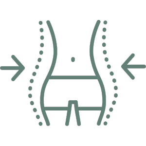

Beneficios
Beneficios del ayuno protegido con el
Sirope de Savia
(Jarabe de Arce y Palma)
Desintoxicación del Organismo
Ayuda a limpiar y purificar tu cuerpo, eliminando toxinas acumuladas.
Mejora de la Energía y Vitalidad
Experimenta un aumento notable en tus niveles de energía y una mejora en tu bienestar general.

Pérdida de Peso
Utiliza tu propia grasa corporal como fuente de energía, promoviendo un adelgazamiento efectivo y saludable.
Asesoría nutricional
Recibe indicaciones personalizada por parte de nuestros nutricionistas
Ahorro de dinero
Al estar en un proceso de ayuno, no se gasta dinero en comida diaria.
Espiritualidad o Conexión
Eleva la frecuencia vibratoria , energética y espiritual. Despierta la creatividad, la intuición y la consciencia del Ser.